Hybrid Orbitals
Secondo la teoria del legame di valenza, la formazione di un legame covalente richiede la sovrapposizione di orbitali semipieni degli atomi. Il carbonio nel suo stato fondmentale ha la seguente configurazione elettronica

secondo tale configurazione il carbonio può formare al massimo due legami, dando origine a composti del tipo CX2. Si osservano invece, tranne rare eccezioni composti tetravalenti in cui il carbonio forma quattro legami covalenti. Per spiegare tale comportamento su può immaginare che data la piccola differenza di energia tra gli orbitali 2s e 2p, un elettrone dell'orbitale 2s venga promosso all'orbitale 2p. La configurazione del carbonio eccitato C* è:
la presenza di quattro elettroni spaiati, riesce quindi a spiegare la tretravalenza del carbonio. L'energia necessaria per pruomuovere l'elettrone 2s è nota come energia di promozione ed è pari a 404 kjmol-1.
Se consideriamo la molecola di metano CH4 non essendo tutti e quattro gli orbitali del C*, uguali tra loro, dovremmo aspettarci legami di natura differente con ciascuno degli atomi di idrogeno. Si osserva sperimentalmente che i quattro legami sigma, C-H, sono perfettamente equivalenti e disposti in maniera simmetrica attorno all'atomo di carbonio centrale. I quattro legami risultano essere orientati lungo i vertici di un tetraedro regolare:
Per giustificare tale geometria e il numero di legami si ricorre al processo di ibridizzazione che porta a quattro orbitali ibridi aventi identici, cioè con stessa forma ed energia. In tale processo le funzioni d'onda dei 4 orbitali atomici del carbonio si combinano per dare 4 funzioni d'onda dei 4 orbitali ibridi.
Il processo di ibridizzazione richiede una certa quantità di energia, detta di ibridizzazione. Gli orbitali ibridi formatisi prendono il nome di orbitali sp3, poichè derivano da un orbitale s e 3 orbatali p. I 4 orbitali ibridi sp3 sono anche detti ibridi tetraedrici, poichè sono orientati nello spazipo in modo tale che i loro assi formino angolo di 109°28' assumendo quindi una geometria tetraedrica.
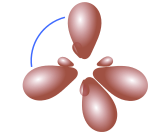sp3 hybrid orbitals for Water, H2O
Examining the outer electroning configuration of oxygen, Two of the axis electron in the outer shell are located in the 2s orbital, whilst the other four electrons are in the three 2p orbitals. Two electons populate say the 2px orbital, leaving two unpaired electron in two 2pz and 2py orbitals, which reveals why oxygen forms two covalent bond with other atoms. Two p orbitals can be used for overlapping with the s orbitals of hydrogen atoms. Since bonding occurs along axes (that of px and py) that are mutually perpendicular, we would predict the H – O – H angle in water to be 90°. However we know from experimental measurements that the bond angle in water is 104.5°.
The bond angle of 104.5° is examplained considering the sp3 type of hybridization as for the carbon atom. Two sp3 orbitals are used for overlapping with the s orbitals of hydrogen atoms, leaving the two pairs of nonbonding electrons in the remaining 2sp3 hybrid orbitals. Because the sp3 hybrid orbitals form a pyramidal structure, the hydrogen atoms attached to the oxygen atom with the nonbonding electrons also for a pyramidal structure. Now wer can undestand why water does not have a linear structure.
sp2 Hybridization
Lo stato fondamentale del Boro è [He]2s22p1, che con un solo elettrone spaiato non basterebbe a spiegare i tre legami che si hanno nel trifluoruro di Boro BF3. Con l'ibridizzazione dell'orbitale 2s con orbitali 2p si ha la formazione di tre orbitali ibridizzati sp2 ciascuno con un elettrone spaito in grado di sovrapporsi agli orbitali 3p di ciascun atomo di fluoro.
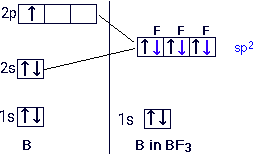Ibridizzazione sp
Il Berillio forma composti bivalenti come, BeCl2 e BeH2 con geometria lineare, nella quale i legami Be-Cl sono disposti a 180° l'uno dall'altro. La configurazione elettronica esterna del Be è 2s2, la formazione di due legami covalenti richiede la promozione di un elettrone dall'orbitale 2s al 2p. Essendo i due legami identici anche in questo caso si verifica l'ibridizzazione. Dalla combinazione di un orbitale s e di un orbitale p, si ottiengono due orbitali ibridi sp, o ibridi diagonali.

La formazione della molecola di BeCl2, risulta dalla sovrapposizione dei due orbitali ibridi sp del berillio con gli orbitali 3p degli atomi di cloro.
 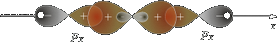
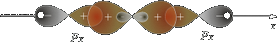
Orbitali ibridi sp3d
L'ibridizzazione non coinvolge solo gli orbitali s e p, ma interessa tutti gli orbitali. Nella molecola PCl5 il fosforo, utilizza 5 orbitali ibridi sp3d, così come in AsF5:
I 5 orbiali ibridi sp3d sono diretti lungo i vertici di una bipiramide triangolare:

I legami assiali sono più deboli di quelli equatoriali e anche più lunghi; i 5 orbitali non sono quindi isoenergetici e dalla rottura dei legami assiali, sia ha la formazione di una molecola di PCl3 e di Cl2.
Stessa ibridizzazione viene adottato dall'AsF5.
Orbitali ibridi sp3d2
L'esafluoruro di zolfo, SF6 impiega 6 orbitali ibridi sp3d2, i qualei formano tra loro angoli di 90°

Ibridi sd3
I 4 orbitali sd3 sono dieretti lungo gli assi di un tetraedro regolare come nel caso di quelli sp3. Il manganese nello ione permanganato MnO4- utlizza 4 orbitali ibridi sd3.
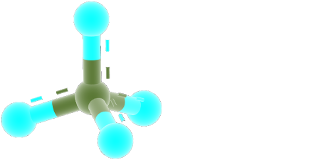Ibridi dsp2
I 4 orbitali ibridi dsp2 sono diretti verso i vertici di un quadrato, formando quindi angoli di 90° e giaccion sullo stesso piano. Il Ni utiliizza orbitali ibridi dsp2 nello ione complesso [Ni(CN)4]2-:
La presenza degli ioni cianuro carichi negativamente favorisce l'accoppiamento degli elettroni spaiati presenti negli orbitali 3d del Ni2+
Ibridi dsp3
I cinque orbitali ibridi dsp3 sono diretti lungo verso i vertici di una piramide tetragonale. I quattro orbitali equatoriali sono isonergentici e diretti verso i vertici di un quadrato. Il quinto orbitale è diretto verso il vertiche della piramide e non è isoenergetico con gli altri quattro.